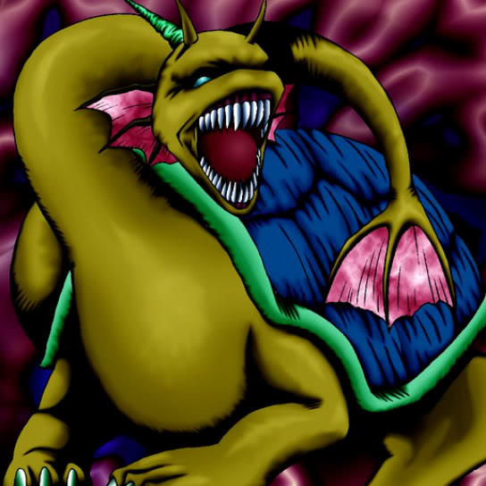

Sea King Dragon

STATS
ATK: 2000
DEF: 1700DECK COST
Deck Cost per Card: 37Fusion List (16 Possible Fusions)
- Sea King Dragon + Akihiron = Aqua Dragon
- Sea King Dragon + Bolt Escargot = Twin-Headed Thunder Dragon
- Sea King Dragon + Bolt Penguin = Twin-Headed Thunder Dragon
- Sea King Dragon + Electric Lizard = Twin-Headed Thunder Dragon
- Sea King Dragon + Electric Snake = Twin-Headed Thunder Dragon
- Sea King Dragon + High Tide Gyojin = Aqua Dragon
- Sea King Dragon + Kaminari Attack = Twin-Headed Thunder Dragon
- Sea King Dragon + Kaminarikozou = Twin-Headed Thunder Dragon
- Sea King Dragon + LaLa Li-oon = Twin-Headed Thunder Dragon
- Sea King Dragon + Octoberser = Aqua Dragon
- Sea King Dragon + Roaring Ocean Snake = Aqua Dragon
- Sea King Dragon + Sanga of the Thunder = Twin-Headed Thunder Dragon
- Sea King Dragon + The Immortal of Thunder = Twin-Headed Thunder Dragon
- Sea King Dragon + Thunder Dragon = Twin-Headed Thunder Dragon
- Sea King Dragon + Time Wizard = Thousand Dragon
- Sea King Dragon + Tripwire Beast = Twin-Headed Thunder Dragon